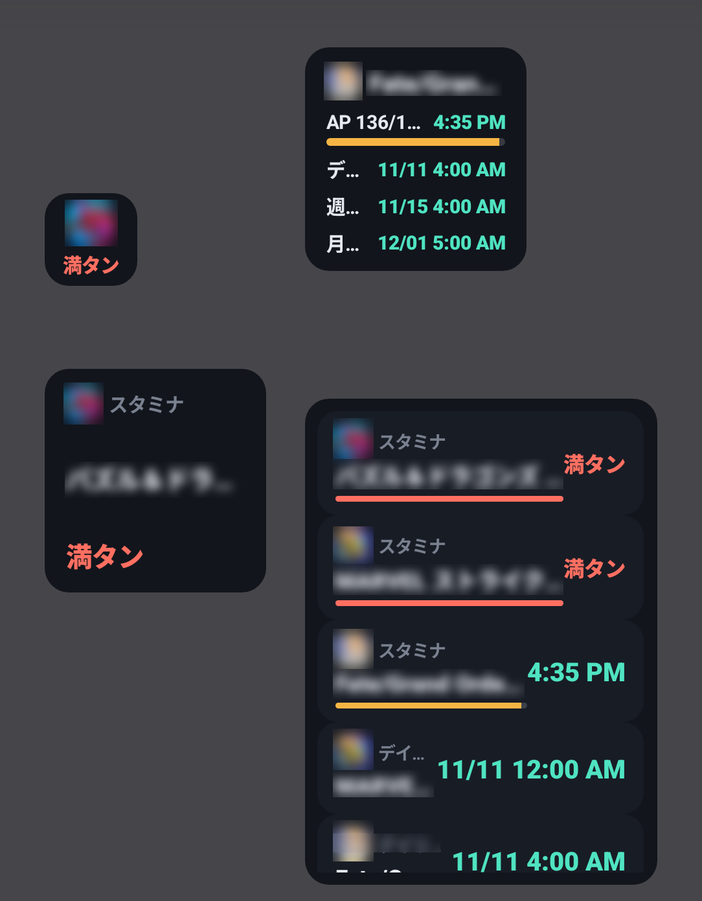

🧩 6. ホーム画面ウィジェット
スタミナ手帳を開かなくても、ホーム画面で次のスタミナ満タン時刻やデイリー・週間リセットの時刻を確認できます。ウィジェットは4種類あり、好きなものを（同じ種類を複数でも）ホーム画面に置けます。
ウィジェットの色は、アプリの「スキン」設定（ライト/ダークなど）に合わせて変わります。時刻の表記も、アプリの12時間/24時間表記の設定に従います。
※ ウィジェットはAndroid端末でのみ利用できます。

📋 4種類のウィジェットの違い
スタミナ手帳（1件版）
次の予定（デイリー/週間リセット・スタミナ満タン）を1件だけ、ゲームのアイコンとゲーム名・時刻で表示します。スタミナが満タンのときは「満タン」と表示されます。
スタミナ手帳（小）
1×1マスの小さなウィジェットです。次の予定のゲームのアイコンと時刻だけを表示します。ホーム画面を広く使いたいときに向いています。
スタミナ手帳（一覧）
直近の予定を、タイムラインと同じ並びで一覧表示します。ウィジェットの高さに合わせて表示件数が変わり、縦に広げるほど多く（最大10件）表示されます。スタミナの行には進捗バーも付きます。複数のゲームを同時に遊んでいる方におすすめです。
スタミナ手帳（ゲーム別）
選んだ1つのゲームだけを表示します。スタミナは進捗バー・現在値/上限・満タンまでの時刻で、デイリー/週間/月間リセットやフリー項目は「種類と時刻」の1行で表示されます。ウィジェットを縦に広げると、表示できる項目が増えます。
PREMIUMのウィジェットを、PREMIUMではない状態で置いた場合は「PREMIUM限定」と表示されます。
➕ ウィジェットをホーム画面に追加する
ウィジェットの一覧を開く
ホーム画面の何も無い場所を長押しし、表示されたメニューから「ウィジェット」を選びます（メニューの名称や操作は端末によって異なります）。
「スタミナ手帳」のウィジェットを置く
一覧から「スタミナ手帳」を探し、置きたい種類をホーム画面へドラッグします。PREMIUM機能のウィジェットには、説明文の先頭に「【PREMIUM】」と書かれています。
（ゲーム別のみ）表示するゲームを選ぶ
ゲーム別ウィジェットを置くと「表示するゲーム」の画面が開きます。ウィジェットに表示したいゲームを選んでください。あとからウィジェットを長押しして、表示するゲームを変更することもできます。
大きさを調整する
置いたウィジェットを長押しすると、縦横に広げたり縮めたりできます。一覧版・ゲーム別は、広げるほど表示できる項目が増えます。
❓ ウィジェットのよくある質問
ゲーム別ウィジェットで、選んでいたゲームを削除した場合や、まだゲームを選んでいない場合に表示されます。アプリを開いてゲームを登録したうえで、ウィジェットを長押しして表示するゲームを選び直してください。
ウィジェットの色は、アプリの「スキン」設定に合わせて変わります。設定画面でスキンを変更してください。
ウィジェットはAndroid端末専用の機能です。